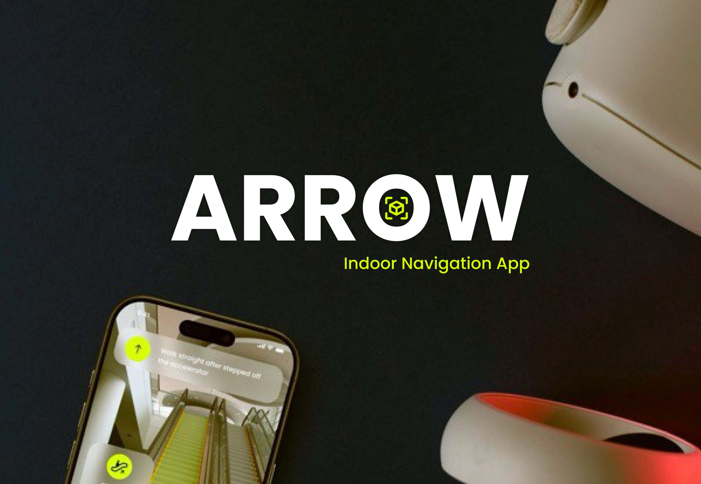
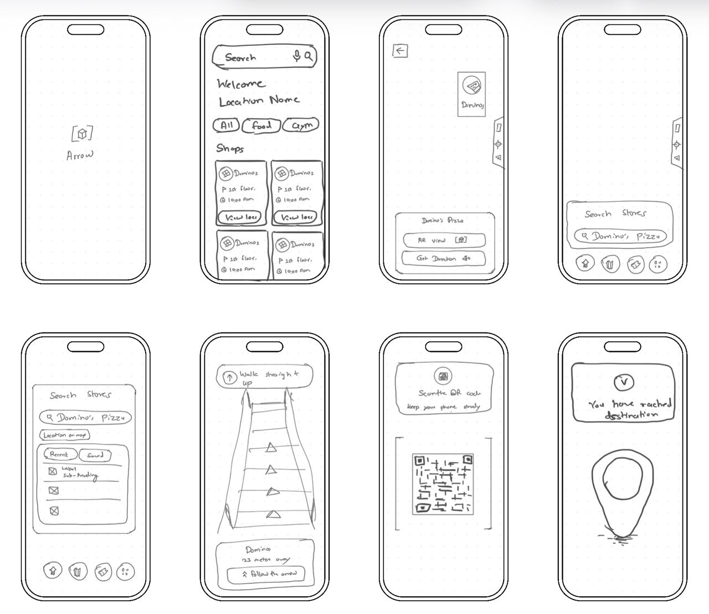

UX/UI Case Study
Arrow – Smart Mall Navigation App
An intuitive indoor navigation experience guiding shoppers through complex mall infrastructures using interactive maps and AR.

Overview
Arrow is a location-aware mobile application designed to solve the chaos of indoor navigation. By leveraging Bluetooth beacons and AR technology, the app provides real-time, turn-by-turn directions within massive shopping malls, helping users locate stores, amenities, and their parked vehicles effortlessly.
The Shopper's Journey
The Problem
Modern malls are massive, multi-level mazes. Shoppers frequently get lost, waste precious time trying to find specific stores, and experience high frustration when trying to locate restrooms, exits, or their parked cars in sprawling parking garages.
The Solution
Arrow acts as a personal digital guide. It offers interactive 3D floor maps, turn-by-turn AR directional arrows superimposed on the camera view, and a smart parking locator to turn mall chaos into a seamless and enjoyable shopping experience.
Research
Project Timeline
4 days
5 days
4 days
7 days
5 days
UI/UX Design Process
The design process for Arrow was divided into three core stages focused on spatial understanding and clear visual feedback:
Empathize & Spatial Mapping
The goal of this phase was to understand how people navigate physical spaces and lose their orientation. I mapped the common pain points, such as confusing mall directories and indistinguishable hallways.
User Personas
Neha Sharma
I want to shop without the hassle, but navigating with a stroller is a nightmare. I'm always wondering where the nearest elevator or restroom is. It's exhausting to rely on confusing directory boards.
Rahul Verma
Malls are huge and I'm usually just trying to meet friends at a specific cafe. It's not just the size of the place, it's the stress of arriving late because I can't find the right floor or store quickly.
Spatial Architecture & User Flow
The app is structured around immediate orientation and destination mapping:
- Search Mechanics: Global search for stores, categories, and amenities with voice support.
- Floor-Switching Logic: Seamless transition between floors using escalators or elevators.
- AR Routing: Superimposing a bright, animated arrow on the camera feed to guide the user.
- "Find My Car": One-tap location saving when parking, with direct routing back.
Visual Identity & AR UI
To ensure high visibility in bright mall environments, the design utilizes high-contrast colors:
- Font: Inter (Clean, highly legible for quick glances)
Color Palette:
Wireframing & High-Fidelity Design
After finalizing the navigation flow, I translated the experience into low-fidelity wireframes and then into polished high-fidelity mobile screens. This helped validate screen hierarchy, AR guidance visibility, and interaction clarity before handoff.

Conclusion
Arrow demonstrates how spatial UX, clear wayfinding visuals, and AR-assisted guidance can transform stressful mall navigation into a smooth and confident journey. By combining user-centered flows with a high-contrast visual system, the final concept improves discoverability, reduces confusion, and helps users reach destinations faster inside complex indoor environments.